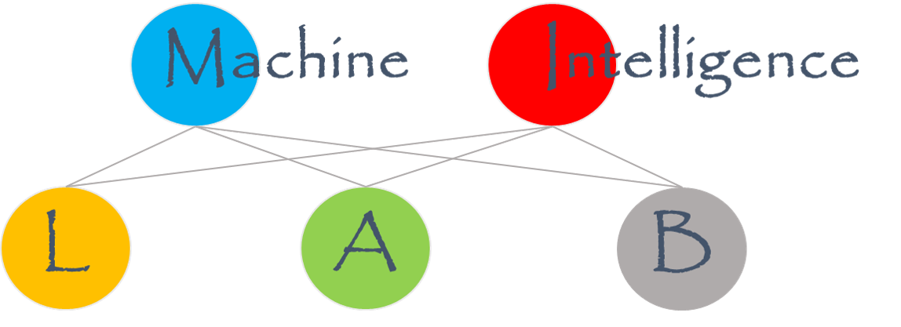

|
Yadong Mu
Wangxuan Institute of Computer Technology
No. 128, Zhong-Guan-Cun North Street
Peking University, Beijing 100080, China
E-mail: myd AT pku.edu.cn OR muyadong AT gmail DOT com |

|

|
Ph.D. / Master Students
- Liu Chenchen
- Zhou Xinzhe
- Tian Guiyu
- Sun Zhicheng
- Wang Xinghan
- Xiao Yinan
- Shen Tianyi
|
- Gong Guoqiang
- Jiang Borui
- Xue Ben
- Jin Yang
- Tan Zhentao
- Jiang Hao
|
Undergraduate Interns
- Ma Kangqi (Grade 2018, Peking University)
- Xu Peiran (Grade 2019, Peking University)
- Zhu Jianhua (Grade 2019, Peking University)
- Cong Yuning (Grade 2019, Peking University)
- Yan Hongyu (Grade 2019, Peking University)
|
Previous Students
- Chi Lu (Master student 2017-2020, Bytedance AI Lab)
- Weng Xinyu (Master student 2017-2020, Government of Jiangsu Province)
- Li Yongzhi (Master student 2018-2021, Bytedance AI Lab)
- Zheng Liangfeng (Master student 2018-2021, Kuaishou)
- Zhuang Nan (Master student 2018-2021, Kuaishou)
- Bao Peijun (Master student 2018-2021, Ph.D. at NTU)
|
Previous Undergraduate Interns
- Zhang Deng (2017 FYP, Peking University -> Renmin University)
- Xu Chenxi (intern & 2018 FYP, Peking University -> CMU)
- Jiang Zhensheng (2018 FYP, Peking University -> University of Michigan)
- Hu Yimin (intern & 2018 FYP, Peking University -> Columbia)
- Xiao Tete (Peking University -> Ph.D. UC Berkeley)
- Liu Yingcheng (Peking University -> Ph.D. MIT)
- Tian Jingjing (Peking University -> Stanford)
- Xiao Bowen (Peking University -> Ph.D. University of Hong Kong)
- Zhang Chi (Peking University -> University of Tokyo)
- Qian Zhiyin (Peking University -> Ph.D. at ETH)
- Wu Ruihai (Peking University -> Ph.D. at Peking University)
- Xu Kehan (Peking University -> Ph.D. at ETH)
- Shi Baifeng (Peking University -> Ph.D. at UC Berkeley)
|
|